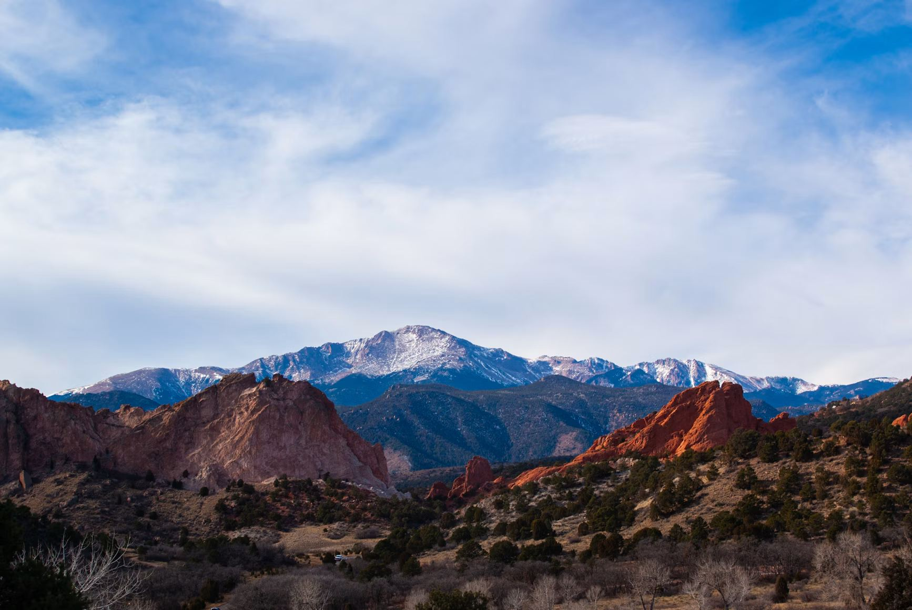

One goal: stand on top of every 14,000-foot peak in Colorado.
› See all 58 peaks| # | Peak | Elevation (ft) | Range | Difficulty | Summit Date | Trip Report |
|---|
Difficulty reflects the standard route; other routes can be harder. Elevations vary by a few feet between sources (USGS, 14ers.com, NAVD88 vs. older surveys). Culebra Peak is on private land (fee + reservation required). Click a column header to sort.
Local hikes and loops that aren't 14ers — time on the dirt between summits.